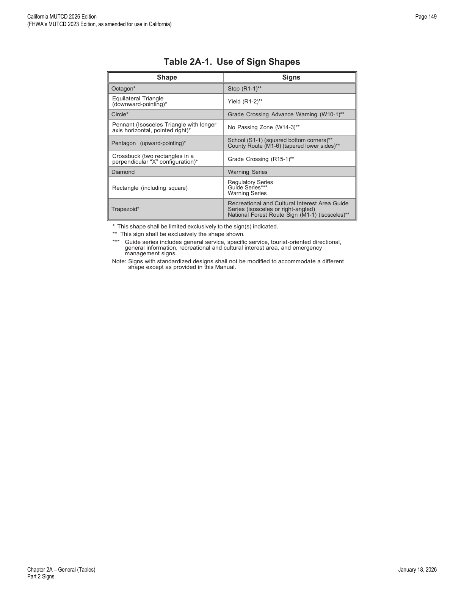
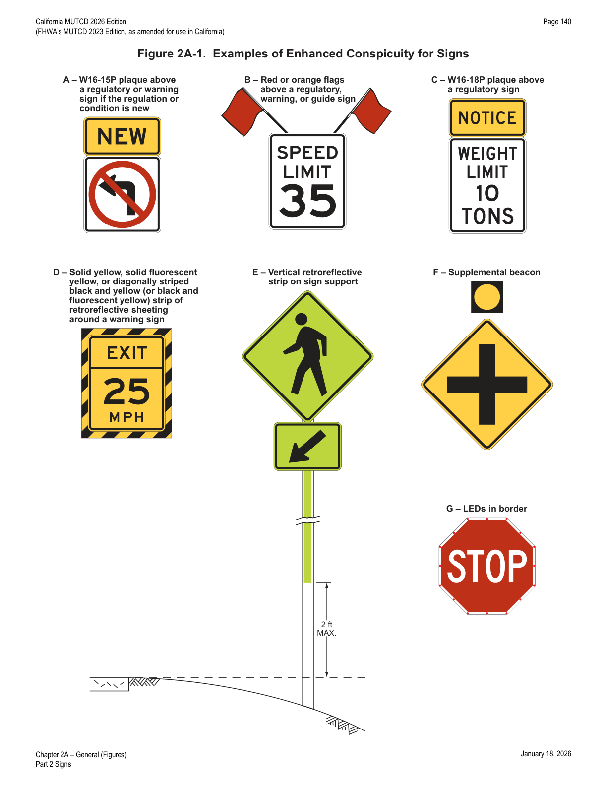
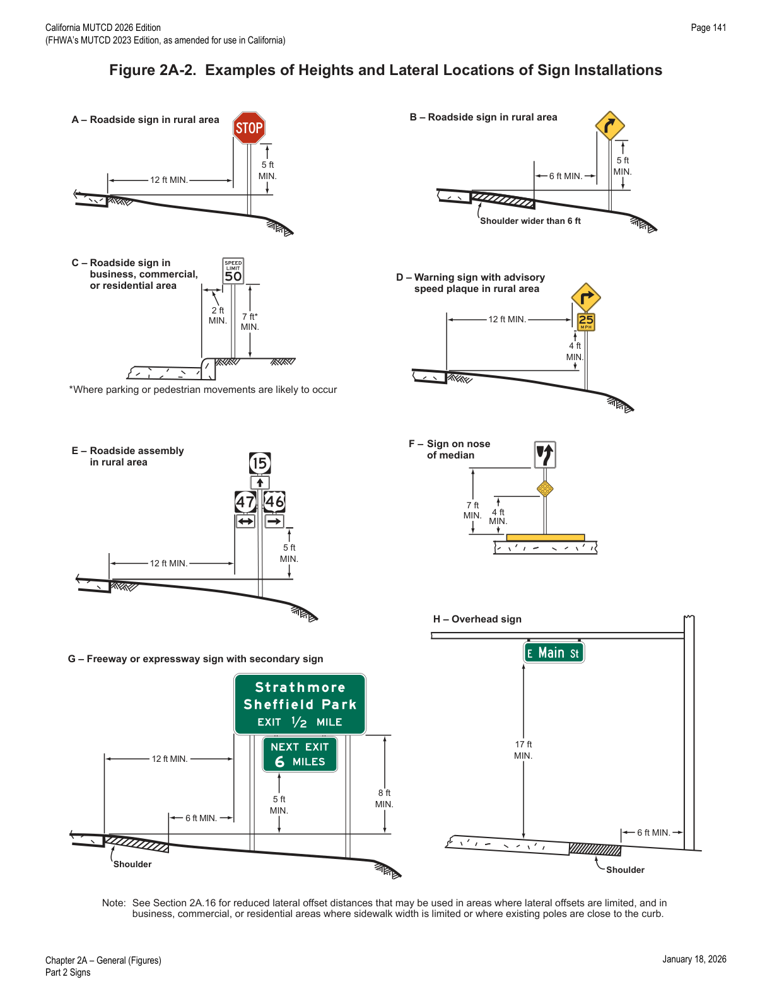
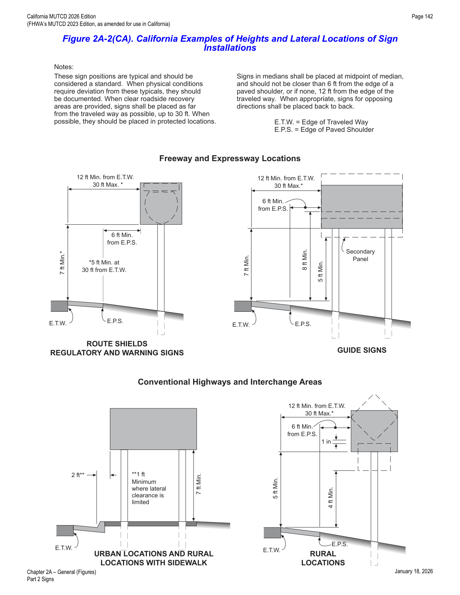
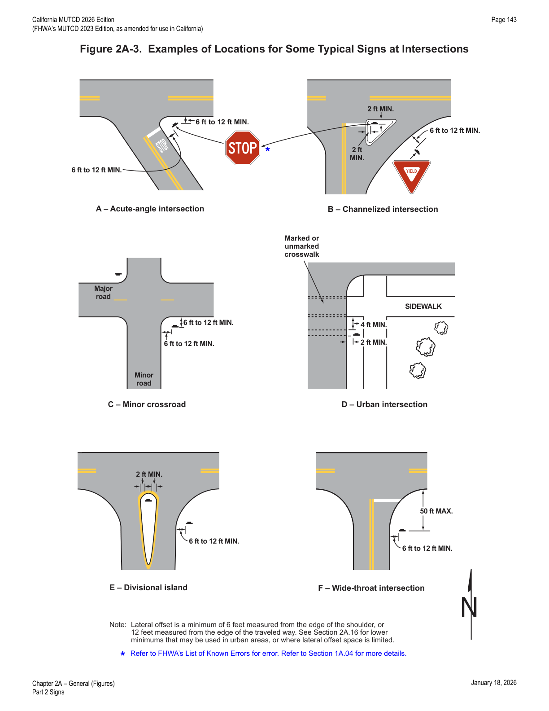
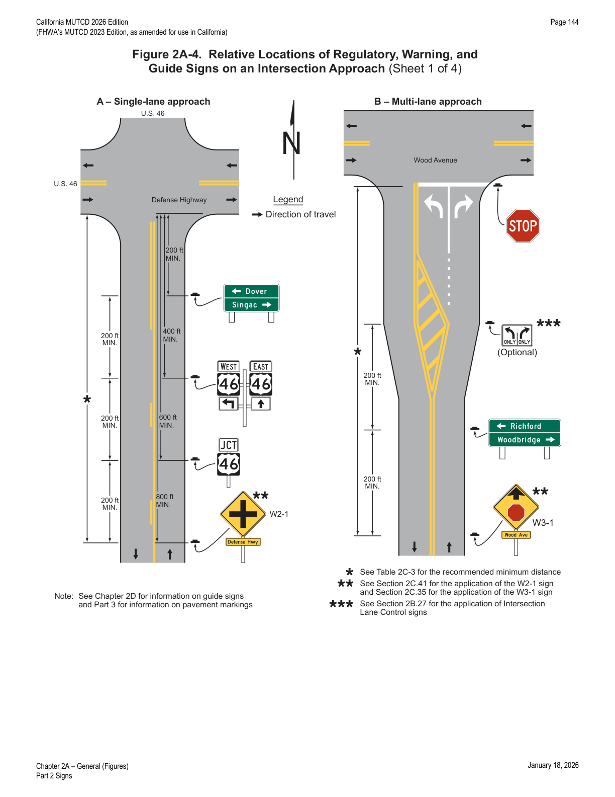
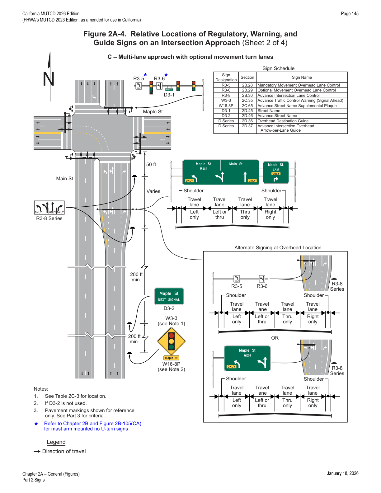
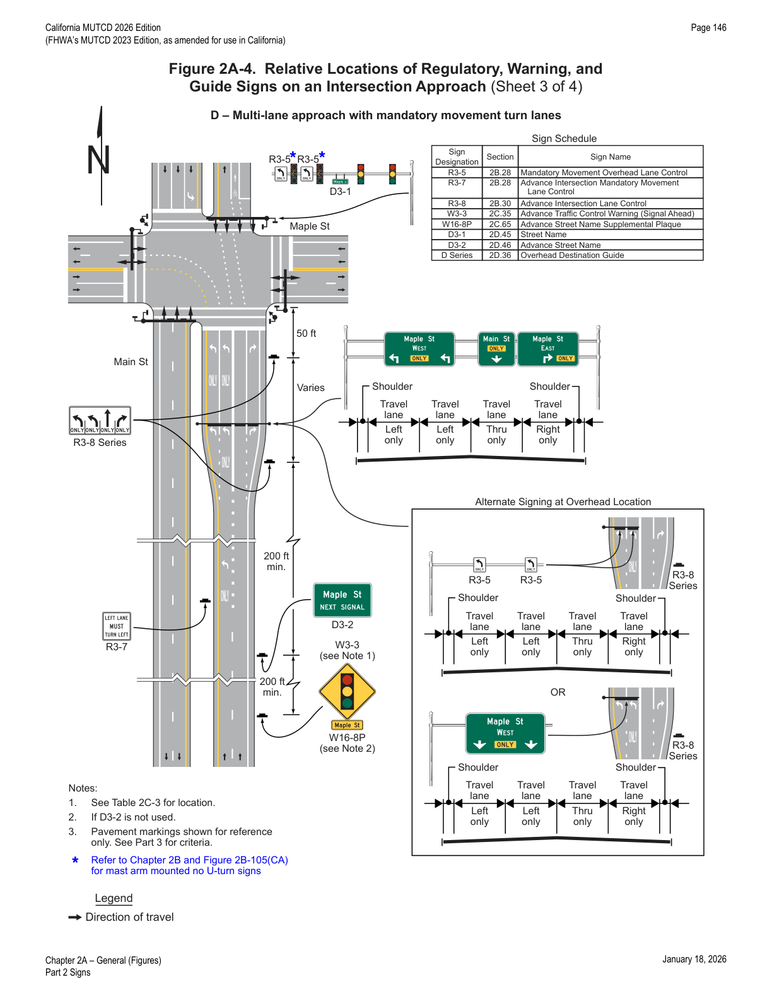
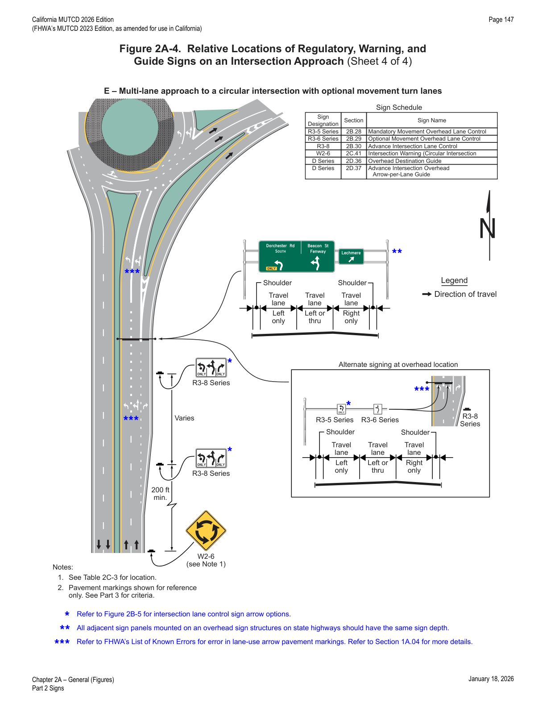
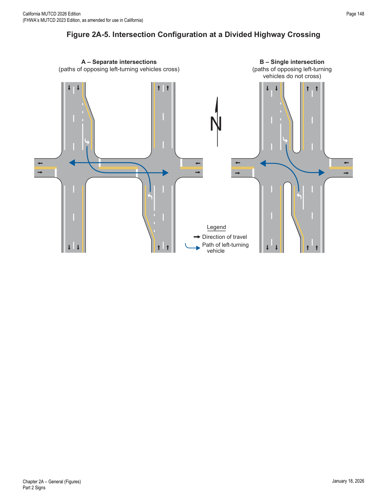

Part 2 · Signs · Chapter 2A
General
Foundational rules that apply across every sign chapter in Part 2: sign function and classification, shape and color standards, dimensioning, word-message and symbol rules, borders, conspicuity enhancement, placement (location, mounting height, lateral offset, orientation), maintenance, sign clutter, and retroreflectivity/illumination requirements.
2A.01Function and Purpose of Signs
- 01This Manual contains Standards, Guidance, and Options for the signing of all types of highways and site roadways open to public travel (see the definition in Section 1C.02). The functions of signs are to provide regulations, warnings, and guidance information for road users, using words, symbols, and arrows to convey messages. Signs are not typically used to confirm rules of the road (see Paragraph 4 of this Section).
- 02Detailed sign requirements are located in the following Chapters of Part 2: 2B — Regulatory Signs, Barricades, and Gates; 2C — Warning Signs and Object Markers; 2D — Guide Signs for Conventional Roads; 2E — Guide Signs for Freeways and Expressways; 2F — Toll Road Signs; 2G — Preferential and Managed Lane Signs; 2H — General Information Signs; 2I — General Service Signs; 2J — Specific Service Signs; 2K — Tourist-Oriented Directional Signs; 2L — Changeable Message Signs; 2M — Recreational and Cultural Interest Area Signs; 2N — Emergency Management Signs.
- 03Definitions and acronyms applicable to signs are provided in Chapter 1C.
- 04Permanent signs should not be used on a frequent basis to confirm rules of the road or statutes. Instead, when determined necessary to advise of new regulations as part of an educational campaign, temporary signs or messages should be used instead of permanent signs, used sparingly and only at strategic locations, and considered only a supporting element of a larger educational campaign rather than the primary source of notification. If engineering judgment determines a permanent sign is needed to distinguish differing requirements of similar statutes in different jurisdictions, the sign should be located near the jurisdictional boundary and away from warning, directional, and higher-priority regulatory signs so as not to contribute to sign clutter (see Section 2A.20).
2A.02Standardization of Application
- 01Urban traffic conditions differ from rural environments, and signs are often applied and located differently. Where pertinent and practical, this Manual sets forth separate recommendations for urban and rural conditions.
- 02Low-volume rural roads typically serve rural residences, agricultural, recreational, resource-management, and development access (mining, logging, grazing), and local roads in rural areas. On these roads, traffic control device use is limited to essential regulation, warning, and guidance information, and the needs of unfamiliar road users making occasional, recreational, or commercial trips must be considered.
- 03Signs should be used only where justified by engineering judgment or studies, as provided in Section 1D.03.
- 04Results from traffic engineering studies of physical and traffic safety or operational factors should indicate the locations where signs are deemed necessary or desirable.
- 05Roadway geometric design and sign application should be coordinated so that signing can be effectively placed to give the road user any necessary regulatory, warning, guidance, and other information.
- 06Each standard sign (see Paragraph 1 of Section 2A.04) shall be displayed only for the specific purpose prescribed in this Manual. Before any new highway, site roadway open to public travel, detour, or temporary route is opened to public travel, all necessary signs shall be in place. Signs required by road conditions or restrictions shall be removed when those conditions cease to exist or the restrictions are withdrawn.
2A.03Classification of Signs
- 01Signs shall be defined by their function as follows: (A) Regulatory signs give notice of traffic laws or regulations. (B) Warning signs give notice of a situation that might not be readily apparent. (C) Guide signs show route designations, destinations, directions, distances, services, points of interest, and other geographical, recreational, or cultural information.
- 01aConstruction signs can be Warning, Regulatory, or Guide signs. Construction signs are included in Part 6.
- 02Barricades are described in Sections 2B.75 and 6K.07.
- 03Gates are described in Section 2B.76.
- 04Object markers are described in Section 2C.70.
2A.04Design of Signs
- 01This Manual shows many standard signs and object markers approved for use on streets, highways, bikeways, and pedestrian crossings. Standard signs and object markers have a standardized design, shape, background, and legend as shown in this Manual.
- 02In the provisions for individual standard signs and object markers, the general appearance of the legend, color, and size are shown in the accompanying tables and illustrations, and are not always detailed in the text.
- 03Detailed drawings of standard signs, object markers, alphabets, symbols, and arrows (see Figure 2D-3) are contained in the "Standard Highway Signs" publication and the California Sign Specifications (see Section 1A.05).
- 04The basic requirements of a sign are that it be legible to those for whom it is intended and understandable in time to allow for a proper response. Desirable attributes include: (A) high visibility by day and night; and (B) high legibility (adequately-sized letters, symbols, or arrows, and a short legend for quick comprehension by an approaching road user).
- 05Standardized colors and shapes are specified so that the several classes of traffic signs can be promptly recognized. Simplicity and uniformity in design, position, and application are essential for a sign to be effective.
- 06The term legend shall include all word messages and symbol and arrow designs that are intended to convey specific meanings.
- 07Uniformity in design shall include shape, color, dimensions, legends, letter style, borders, and illumination or retroreflectivity.
- 08Standardization of these designs does not preclude further improvement by minor modifications to the orientation of symbols (see Section 2A.09), width of borders, or layout of word messages, but all shapes and colors shall be as indicated.
- 09All symbols (see Section 2A.09) shall be unmistakably similar to, or mirror images of, the adopted symbol signs shown in the "Standard Highway Signs" publication. Symbols and colors shall not be modified unless otherwise provided in this Manual. Symbols, colors, or other design features not shown in "Standard Highway Signs" shall follow the procedures for experimentation and change described in Chapter 1B.
- 10Where a standard word message is applicable, the wording shall be as provided in this Manual.
- 11Where word messages are necessary other than those provided in this Manual (see Paragraph 15), the signs shall be of the same shape and color as standard signs of the same functional type.
- 12Where the legend of a standard sign is a symbol or a combination of a symbol and words, an alternative word legend shall not be allowed in place of the symbol, except as otherwise provided in this Manual.
- 13Where a standard sign provided in this Manual or "Standard Highway Signs" is applicable, an alternative legend sign or design shall not be allowed in place of the standardized legend or design except as provided in this Manual.
- 14Where a standard sign is applicable but the legend is variable (such as for destination names), an alternative sign design or dimensions shall not be allowed in place of the standardized design for the non-variable elements except as provided in this Manual.
- 15Caltrans (in accordance with CVC § 21400) and owners of site roadways open to public travel may develop special word legend signs where engineering judgment determines roadway conditions make it necessary to provide additional regulatory, warning, or guidance information, such as notifying road users of special regulations or an unapparent situation. Unlike unassigned colors or unapproved symbols, new word legend signs may be used without experimentation.
- 15aExcept as noted in the Option above, in accordance with CVC § 21401, highway agencies shall not develop word message signs and plaques. Only word message signs and plaques conforming to FHWA's "Standard Highway Signs" or the Caltrans standards and specifications shall be placed on streets and highways. Any new non-conforming word message signs or plaques must be submitted to the California Traffic Control Devices Committee (CTCDC) for possible inclusion in the CA MUTCD and adoption in the Caltrans standards and specifications.
- 15bLocal agencies may develop the place/facility name or day, date, time portion of a word message sign to notify road users of special events/circumstances or warn of an unapparent situation. Unlike symbol signs and colors, these modified word message signs may be used without experimentation.
- 16The message conveyed by some special word legend signs might be unclear to the road user. Although experimentation is not required, such legends might still warrant evaluation to determine comprehension or possible misinterpretation.
- 17Scanning graphics are graphics designed for scanning by machine, including bar codes, quick-response (QR) codes, or other matrix bar-code formats or similar graphics.
- 18Unless otherwise provided in this Manual or as provided in Paragraph 19, telephone numbers, Internet addresses, e-mail addresses, domain names, URLs, metadata tags ("hash-tags"), and scanning graphics for obtaining information (other than for maintenance/inventory purposes per Paragraphs 21–23) shall not be displayed on any sign, plaque, sign panel, or changeable message sign.
- 19Internet addresses, e-mail addresses, telephone numbers, scanning graphics, or other information graphics may be displayed on sign faces, plaques, sign panels, and changeable message signs that are oriented away from, or otherwise not readily visible to, operators of motor vehicles but intended for viewing only by pedestrians, occupants of parked vehicles, and driving automation systems.
- 20Pictographs shall not be displayed on signs except as specifically provided in this Manual. Pictographs shall be simple, dignified, and devoid of any advertising, and shall not contain scanning graphics for conveying information. When used to represent a political jurisdiction (State, county, or municipal corporation), the pictograph shall be the official designation adopted by the jurisdiction, except as provided otherwise in this Manual. When used to represent a college or university, the pictograph shall be the institution's official adopted seal, and shall not include pictorial representations of programs or athletic mascots.
- 21No items other than official traffic control signs, inventory stickers or decals, sign installation dates, manufacturer name, sign sizes, sign designations, anti-vandalism stickers, inventory or maintenance codes, and maintenance-related scanning graphics shall be mounted on the back of a sign.
- 22The date of fabrication, sign designation, sign size, and/or manufacturer name may be displayed on the front of a sign face in accordance with Paragraph 23.
- 23If displayed on the sign face, this maintenance/inventory information shall be completely within the border or inset along the bottom edge of the sign. The letter height or scanning graphic shall not exceed ¾ of the width of the border or inset, or if no border is used, shall not exceed 1.75 inches and shall be within 2 inches of the sign edge. Lettering within the border shall match the sign background color; lettering or scanning graphic within the inset shall match the sign border color. For changeable message or blank-out signs, such information, if displayed, shall be embossed in a non-contrasting color in the sign housing.
- 24Refer to FHWA's List of Known Errors for an error in the Paragraph 23 text (see Section 1A.04).
- 25If no border is used, the letter height or scanning graphic should be 11% of the legend.
2A.05Shapes
- 01Particular shapes, as shown in Table 2A-1, shall be used exclusively for specific signs or a series of signs, unless otherwise provided in this Manual for a particular sign or class of signs.
- 02The Crossbuck is a shape exclusive to the Grade Crossing (R15-1) sign and shall not be obscured by mounting a different shape sign on the back of the Crossbuck (see Section 8B.03).
- 03Shapes exclusive to a particular sign (an octagon for STOP, a pennant for NO PASSING ZONE, a circle for Railroad Advance) should not be obscured by another sign mounted on the back of the same assembly and protruding beyond the edge of the exclusively-shaped sign. Methods to consider instead: (A) install the signs on separate mountings; (B) increase the size of the sign with the exclusive shape so the back-mounted sign does not obscure it; (C) increase the mounting height of the exclusively-shaped sign to allow a back-mounted sign below its bottom edge while still meeting minimum mounting height for the lower sign.
- 04Where lateral space is constrained (e.g., a narrow median barrier or adjacent retaining wall), methods to maintain the sign shape include: (A) angling the sign up to 45 degrees toward the roadway while maintaining adequate legibility; (B) installing the sign at a different location with adequate advance warning, supplemented with a Distance plaque (see Section 2C.61) if appropriate; (C) reducing sign size but supplementing with a duplicate sign on the opposite side of the roadway (see Section 2A.11); (D) angling or reducing size and also supplementing with a duplicate warning sign and Distance plaque at an upstream location; (E) mounting the sign asymmetrically on the support (e.g., on a bridge parapet or railing) so its edge does not overhang the roadway, shoulder, or areas used by bicyclists or pedestrians.
- 05Where the shape cannot be maintained due to lateral constraints: (A) for warning signs or other signs normally in a horizontal rectangle, the legend may be displayed in a vertical rectangle; (B) when mounted overhead, the word legend for a standard warning sign may be displayed in a horizontal rectangle.
- 06Provisions for mounting height of signs overhanging the traveled way are contained in Section 2A.15.
- 07Provisions for lateral offset are contained in Section 2A.16.
- 08Modifications to sign shapes, such as cutting off the left and right points of a diamond, shall not be allowed.
- 09Where the methods described in Paragraph 3 are impracticable, the legend of the warning sign may be displayed in a vertically-oriented rectangle.

Signs with standardized designs shall not be modified to accommodate a different shape except as provided in this Manual.
2A.06Colors
- 01The colors used on signs and their specific uses shall be as provided in the applicable Sections of this Manual. Color coordinates and values shall be as described in 23 CFR, Part 655, Subpart F, Appendix.
- 02Colors (see Section 1D.05) shall be consistent across the face of a sign or sign panel. Color gradients (smooth or defined gradual transitions within a color or between colors) shall not be allowed, except as specifically provided in Section 2J.03 for business identification sign panels.
- 03Common uses of sign colors are shown in Table 2A-2. Color schemes on specific signs are shown in the illustrations in each applicable Chapter.
- 04Whenever white is specified as a color in this Manual or in "Standard Highway Signs," it is understood to include silver-colored retroreflective coatings or elements that reflect white light.
- 05The colors coral and light blue are being reserved for uses to be determined in the future by FHWA.
- 06Information on color coding of destinations on guide signs, including community wayfinding signs, is contained in Chapter 2D.
- 07The approved fluorescent version of the standard red, yellow, green, or orange color may be used as an alternative to the corresponding standard color.
- 08The fluorescent version of red, yellow, green, or orange colors provides higher conspicuity than the standard colors, especially during twilight.
| Type of Sign | Legend Colors | Background Colors |
|---|---|---|
| Regulatory | Black, White | White, Red, Black |
| Regulatory — Prohibitive | Black, White | White, Red2 |
| Regulatory — Permissive | Black | White |
| Warning | Black | Yellow, Fluorescent Yellow-Green1 |
| Pedestrian | Black, Purple | Yellow, Fluorescent Yellow-Green, Fluorescent Pink |
| Bicycle | Black, Purple | Yellow, Fluorescent Yellow-Green, Fluorescent Pink |
| Guide | White | Green, Blue, Brown |
| Interstate Route | Blue, Red, White | White, Blue, Red |
| State Route | Black, White | White, Green |
| U.S. Route | Black | White |
| County Route | Black | White |
| Forest Route | Black | White |
| Street Name | White | Green |
| Destination | White | Green |
| Reference Location | White | Green |
| Information | White, Black | Blue, Green |
| Evacuation Route | White | Blue |
| Road User Service | White | Blue |
| Recreational | White, Black | Brown |
| Temporary Traffic Control | Black | Orange, Fluorescent Orange |
| Incident Management | White, Black | Pink, Fluorescent Pink |
| School | Black | Fluorescent Yellow-Green |
| ETC-Account Only | Black | White, Purple5 |
1 Fluorescent versions of background colors may also be used. 2 Legend/background combination for use only as identified for specific signs. 5 Use of purple on signs is restricted per Chapter 2F.
2A.07Dimensions
- 01"Standard Highway Signs" prescribes design details for different sign/plaque sizes depending on the facility type, including bikeways. Smaller sizes are for bikeways and off-road applications; larger sizes are for freeways/expressways and oversized applications on multi-lane divided highways and undivided highways with five or more lanes and/or high speeds; intermediate sizes are for other highway types. Minimum sizes for specific applications are prescribed in the sign size tables in each Chapter.
- 02Sign dimensions prescribed in the sign size tables of this Manual and in "Standard Highway Signs"/California Sign Specifications shall be used unless engineering judgment determines other sizes are appropriate per the following. Except as provided in Paragraph 3, where smaller-than-prescribed sizes are used, dimensions shall not be less than the minimum specified. Sizes shown in the Minimum columns that are smaller than the Conventional Road columns shall only be used on low-speed roadways, alleys, site roadways open to public travel, and low-volume rural roads with operating speeds of 30 mph or less, and only where the reduced legend size is adequate for the regulation or warning or where physical conditions preclude larger sizes.
- 03For alleys with restrictive physical conditions and vehicle use that limits installation of the Minimum size sign (or Conventional Road size if no Minimum size is shown), both sign height and width may be decreased by up to 6 inches.
- 03aRefer to FHWA's List of Known Errors for an error in the Paragraph 3 text (see Section 1A.04).
- 04Sizes in the Freeway and Expressway columns should also be used for other higher-speed conventional-road applications, based on engineering judgment, for larger signs with increased visibility and recognition.
- 05Sizes in the Oversized columns should be used where speed, volume, or other factors call for increased emphasis, improved recognition, or increased legibility, as determined by engineering judgment or study.
- 06Except as provided in Paragraph 7 and where specifically prohibited, increases above minimum prescribed sizes should be used where greater legibility or emphasis is needed. If signs larger than the prescribed sizes are used, overall sign dimensions should be increased in 6-inch increments.
- 07Where a maximum allowable sign size is prescribed, increases in sign size above the maximum shall not be allowed.
- 08Where engineering judgment determines sizes different from the minimum prescribed dimensions are appropriate, standard shapes and colors shall be used, and standard proportions shall be retained as much as practicable.
- 09Except where specifically prohibited, when supplemental plaques are installed with larger-sized signs, a corresponding increase in plaque size and legend should also be made, in approximately the same relative proportion as the conventional-sized plaque is to the conventional-sized sign.
- 10At intersections where the left-turn lane treatment results in channelized offset left-turn lanes (e.g., a parallel or tapered left-turn lane between two medians), the size of regulatory signs, if used, should be of the next higher roadway classification, if feasible, as shown in Table 2B-1 and 2B-1(CA).
2A.08Word Messages
- 01Except as otherwise provided in this Manual, all word messages shall be aligned horizontally across a sign, reading left to right.
- 02Except as provided in Section 2A.04, all word messages shall use standard wording as shown in this Manual and in "Standard Highway Signs."
- 03All sign lettering, numerals, and other characters shall be of the Standard Alphabets provided in "Standard Highway Signs," unless otherwise provided in this Manual.
- 04Sign lettering for names of places, streets, and highways shall be a combination of lower-case letters with initial upper-case letters. Lettering for other legends shall be upper-case letters, unless otherwise provided for a particular sign or message type.
- 05Except as provided in Chapter 2E, when a mixed-case legend is used, the nominal loop height of the lower-case letters shall be ¾ of the height of the initial upper-case letter.
- 06The unique letter forms for each Standard Alphabet series shall not be stretched, compressed, warped, or otherwise manipulated.
- 07Section 2D.03 contains information on acceptable methods of modifying the length of a word for a given letter height and series.
- 08Word messages should be as brief as practical for a clear, simple meaning, with lettering large enough for necessary legibility distance. A minimum ratio of 1 inch of letter height per 30 feet of legibility distance should be used.
- 09Abbreviations (see Section 1D.08) should be kept to a minimum, except as otherwise prescribed.
- 10Word messages should not contain periods, apostrophes, question marks, ampersands, or other non-letter/numeral/hyphen punctuation unless necessary to avoid confusion.
- 11Diacritical marks on words or names adapted to English are not normally needed on signs for comprehension or navigational purposes.
- 12A legend in a secondary language, in addition to English, may be displayed on sign faces, plaques, sign panels, and changeable message signs oriented away from, or otherwise not readily visible to, motor vehicle operators but intended for pedestrians and occupants of parked vehicles.
- 13The solidus (slanted line/forward slash) is intended for fractions only and should not be used to separate words on the same line of legend; a hyphen should be used instead, such as "TRUCKS - BUSES."
- 14Fractions shall be displayed with the numerator and denominator diagonally arranged about the solidus. Overall fraction height is measured from top of numerator to bottom of denominator, each vertically aligned with the upper/lower ends of the solidus, and shall be 1.5 times the height of an individual numeral within the fraction.
- 15Except as otherwise provided, distances shall be displayed on signs using fractions of a mile rather than decimals.
- 16"Standard Highway Signs" contains details regarding the layouts of fractions on signs.
- 17When initials represent an abbreviation for separate words (such as "U S" for a United States route), the initials should be separated by a space of between ½ and ¾ of the letter height of the initials.
- 18When an Interstate route is displayed in text form instead of the route shield, a hyphen should be used for clarity, such as "I-50."
- 19Letter height is expressed as the height of an upper-case letter. For mixed-case legends, the lower-case letter height is derived from the initial upper-case letter height by a prescribed ratio. "Loop height" refers to the portion of a lower-case letter excluding ascending/descending stems or tails (as in "d" or "q"). Nominal loop height equals the actual height of a non-rounded lower-case letter without ascenders/descenders (such as "x"); rounded portions of a rounded lower-case letter extend slightly beyond the projected baselines, and this additional height is excluded from the expressed lower-case letter height.
2A.09Symbols
- 01Symbol designs shall in all cases be unmistakably similar to those shown in this Manual and in "Standard Highway Signs."
- 02Although most standard symbols are oriented facing left, mirror images may be used where the reverse orientation might better convey a direction of movement to road users.
- 03New symbol designs are adopted by FHWA based on research evaluations of road user comprehension, sign conspicuity, and sign legibility.
- 03aThe use of symbols over word messages is preferred.
- 04State and/or local highway agencies may conduct research studies to determine road user comprehension, sign conspicuity, and sign legibility in compliance with the official experimentation provisions (see Section 1B.05) when a new symbol design is under consideration.
- 05Sometimes a change from word messages to symbols requires significant time for public education and transition; this Manual therefore sometimes includes the practice of using educational plaques to accompany new symbol signs.
- 06New standard warning or regulatory symbol signs should be accompanied by an educational plaque where engineering judgment determines the plaque will improve road user comprehension during the transition from word message to symbol signs.
- 07Educational plaques may be left in place as long as they are in serviceable condition.
- 08A symbol used for a given category of signs (regulatory, warning, or guide) shall not be used for a different category of signs, except as specifically authorized in this Manual.
- 09A recreational and cultural interest area symbol (see Chapter 2M) shall not be used on streets or highways outside of recreational and cultural interest areas.
- 10A recreational and cultural interest area symbol shall not be used on any regulatory or warning sign on any street, road, or highway.
- 11Section 2M.07 contains provisions for using recreational and cultural interest area symbols to indicate prohibited activities or items in non-road applications.
2A.10Sign Borders
- 01Unless otherwise provided, signs shall have a border of the same color as the legend, to outline their distinctive shape and give easy recognition and a finished appearance.
- 02The corners of all sign borders shall be rounded, except for STOP signs.
- 03A dark border on a light background should be set in from the edge, while a light border on a dark background should extend to the sign edge. A border for 30-inch signs with a light background should be ½ to ¾ inch wide, set ½ inch from the edge; for similar signs with a light border, a width of 1 inch should be used. For other sizes, border width should be similarly proportioned but should not exceed the stroke-width of the major lettering. On signs exceeding 72 × 120 inches, the border should be 2 inches wide. On unusually large signs with oversized letter heights, route shields, or other legend elements, the border should be 2.5 inches wide and should not exceed 3 inches. Except for STOP signs and large guide signs (and as otherwise provided in Section 2E.14), corners should be rounded to a radius concentric with the border.
- 04Section 2A.12 contains information regarding the use of light-emitting diode (LED) units within the border of a sign.
2A.11Enhanced Conspicuity for Standard Signs
- 01Based on engineering judgment, where improving the conspicuity of a standard regulatory, warning, or guide sign is desired, any of the following methods may be used (see Figure 2A-1): (A) increasing the sign size (see Paragraph 7 of Section 2A.07 for maximum sizes); (B) dual signing — adding an identical sign on the left-hand side of the roadway at the same location; (C) adding a solid yellow or fluorescent yellow rectangular header panel above a standard regulatory sign, matching its width, with "NOTICE," "STATE LAW," or other appropriate text in black letters for a period determined by engineering judgment; (D) adding a NEW plaque (see Section 2C.60) above a new standard regulatory or warning sign per Paragraph 3; (E) adding one or more red or orange flags (cloth or retroreflective sheeting) above a standard regulatory or warning sign, oriented at 45 degrees to the vertical; (F) adding a solid yellow, solid fluorescent yellow, or diagonally-striped black-and-yellow (or black-and-fluorescent-yellow) retroreflective strip at least 3 inches wide around the perimeter of a standard warning sign, which may be accomplished by mounting the standard sign on a background 6 inches larger; (G) adding a Warning Beacon (Section 4S.03) to a standard regulatory sign other than STOP, DO NOT ENTER, WRONG WAY, or Speed Limit, or to a warning or guide sign; (H) adding a Speed Limit Sign Beacon (Section 4S.04) to a standard Speed Limit sign; (I) adding a Stop Beacon (Section 4S.05) to a STOP, DO NOT ENTER, or WRONG WAY sign; (J) adding a rectangular rapid-flashing beacon (Chapter 4L) to a Pedestrian, School, or Trail warning sign at an uncontrolled marked crosswalk; (K) adding LED units within the symbol, legend, or border per Section 2A.12; (L) adding a retroreflective strip to the sign support per Paragraph 5; (M) using other methods specifically allowed elsewhere in this Manual; (N) using a fluorescent version of the applicable sign color where allowed (see Section 2A.06); (O) repeating sets of warning signs on high-speed roads to give notice of an unapparent situation.
- 02Sign conspicuity improvements can also be achieved by removing non-essential and illegal signs from the right-of-way (see Section 1D.02) and relocating signs for better spacing. Section 2A.20 contains information on excessive use of signs.
- 03If a NEW plaque is used, it should remain in place for a period determined by engineering judgment, but not more than 12 months.
- 04Strobe lights shall not be used to enhance the conspicuity of highway signs.
- 05If a retroreflective strip is used on the sign support, it shall be at least 2 inches wide, placed for the full length of the support from the sign to within 2 feet above the near edge of the roadway, and its color shall match the sign background color, except the strip for YIELD and DO NOT ENTER signs shall be red. The retroreflective strip shall not display any legend or other information.
- 06For a post-mounted sign installation, placing a duplicate sign in the same assembly facing the same direction of traffic shall not be permitted as a method of enhancing conspicuity.

2A.12LEDs Used for Conspicuity Enhancement on Standard Signs
- 01This Section regarding light-emitting diode (LED) units applies to illuminated elements that supplement a sign legend to enhance conspicuity.
- 02LED units used to illuminate the full sign display, background, or legend are changeable message signs (CMS), covered in Chapters 2B, 2C, and 2L, and in Part 7.
- 03Applying LED units in compliance with Paragraph 8 does not create a changeable message sign, because the legend is always displayed when the LEDs are not illuminated. Changeable message or blank-out signs whose legends change or extinguish via illuminated elements are addressed elsewhere in this Manual.
- 04LED units may be used individually within the symbol, legend, or border of a sign to enhance conspicuity and legibility (see Section 2A.11).
- 05Except as provided in Paragraph 11, LED units may either operate continuously or be actuated.
- 06Where LED units enhance sign conspicuity, the sign shall otherwise comply with the requirements for retroreflection and illumination for nighttime viewing (see Section 2A.21).
- 07Except as provided in Paragraphs 16 and 17, and for changeable message signs, neither individual LEDs nor groups of LEDs shall be placed within the background area of a sign.
- 08LED applications displaying sign legends or symbols shall use a maximum pitch of 20 millimeters to cover the stroke width of the letter or symbol.
- 09LEDs shall not protrude outside the sign border or legend, shall have a maximum diameter of ¼ inch, and shall be the following colors by sign type: (A) white or red, with STOP, YIELD, DO NOT ENTER, or WRONG WAY signs; (B) white, with other regulatory signs including YIELD signs; (C) white or yellow, with warning signs; (D) white or green, with guide signs; (E) white, yellow, or orange, with temporary traffic control signs of warning type; (F) white, yellow, or fluorescent yellow-green, with school area or pedestrian or bicycle warning signs.
- 10If flashed, all LED units shall flash simultaneously at a steady rate between 50 and 60 times per minute. All LED units in a sign legend or border shall be illuminated simultaneously, with no sequential (chasing) or variable flash rates (dancing), except as otherwise allowed in this Manual. A cluster of LEDs shall not be used within the border of a sign.
- 11Where used in STOP or YIELD signs, flashing LED units shall operate continuously; actuation of the LED units shall not be allowed.
- 12Flashing LED units shall not be used within the legend or border of a Speed Limit sign to indicate the displayed speed limit is in effect.
- 13LED units shall not be used within the legend or border of a sign in conjunction with the phrase WHEN FLASHING in its legend or on a supplemental WHEN FLASHING plaque (see Item E of Paragraph 1, Section 4S.03, for Warning Beacon use to indicate when a regulatory or warning message is in effect).
- 14Where LED units are used along the edge of a sign, at least one LED unit shall be placed along each edge, in addition to one at each corner, so the sign's distinct outline is recognized at night. LED units along each side shall be spaced approximately equidistantly; for a circular sign, the LED units shall clearly form the appearance of a circle and not be perceived as another shape.
- 15Uniformity of the sign design shall be maintained without any decrease in visibility, legibility, or driver comprehension during either daytime or nighttime conditions. LED units shall be capable of automatic dimming via a timing mechanism or a photoelectric ambient-light-sensitive device so the LEDs do not reduce sign legend visibility.
- 16For STOP, YIELD, DO NOT ENTER, and WRONG WAY signs, LEDs may be placed within the border or within one border width inside the background of the sign.
- 17Section 6D.02 contains information about STOP/SLOW paddles used by flaggers. Section 7D.02 contains information about STOP paddles used by adult crossing guards.
- 18Other methods of enhancing the conspicuity of standard signs are described in Section 2A.11.
2A.13Standardization of Location
- 01Standardization of position cannot always be attained in practice. Examples of heights and lateral locations of signs for typical installations are illustrated in Figures 2A-2 and 2A-2(CA), and examples of locations for typical signs at intersections are illustrated in Figure 2A-3 and all four sheets of Figure 2A-4.
- 02Examples of advance signing on intersection approaches are illustrated in all four sheets of Figure 2A-4. Chapters 2B, 2C, and 2D contain provisions regarding the application of regulatory, warning, and guide signs, respectively.
- 03Signs requiring separate decisions by the road user shall be spaced sufficiently far apart for the appropriate decisions to be made.
- 04One factor to consider when determining appropriate sign spacing is the posted or 85th-percentile speed.
- 05Except as provided in Paragraph 8, signs should be located on the right-hand side of the roadway where they are easily recognized and understood; signs in other locations should be considered only supplementary to signs in normal locations, except as otherwise provided.
- 06Signs should be individually installed on separate posts or mountings except where: (A) one sign supplements another; (B) route or directional signs are grouped to clarify information; (C) non-conflicting regulatory signs are grouped, such as Turn Prohibition signs posted with ONE WAY signs, or a parking regulation sign posted with a Speed Limit sign; or (D) Street Name signs are posted with a STOP or YIELD sign.
- 07Signs should be located so they: (A) are outside the clear zone unless placed on a crashworthy support; (B) optimize nighttime visibility; (C) minimize the effects of mud splatter and debris; (D) do not obscure each other; (E) do not obscure the sight distance to approaching vehicles on the major street for drivers stopped on minor-street approaches; and (F) are not hidden from view.
- 08Except for STOP, YIELD, DO NOT ENTER, and WRONG WAY signs, or as otherwise provided, where a sign on a one-way roadway indicates an action intended exclusively or primarily for a road user in the left-hand lane or side of the roadway, such as LEFT LANE MUST TURN LEFT (R3-7) or LEFT LANE ENDS (W9-1), the sign should be located on the left-hand side; on a divided road, it should be located in the median.
- 09Signs located on the left-hand side of a one-way roadway or in the median of a divided road, per Paragraph 8, may be supplemented by an identical sign on the right-hand side.
- 10The clear zone (see definition, Section 1C.02) is the total roadside border area, starting at the edge of the traveled way, available for an errant driver to stop or regain control. Its width depends on traffic volumes, speeds, and roadside geometry. See AASHTO's "Roadside Design Guide," 4th Edition, 2011, for additional information.
- 11With increasing traffic volumes and the need to provide regulatory, warning, and guidance information, an order of priority for sign installation should be established.
- 12An order of priority is especially critical where space is limited and there is demand for several sign types; overloading road users with too much information is not desirable. Priority depends on the specific situation; for example, near an exit ramp, guide and warning signs for the ramp might take precedence over regulatory signs that merely confirm rules of the road, such as a STATE LAW-NO HANDHELD PHONE USE BY DRIVER sign or a mainline Speed Limit sign where there is no change in the speed zone.
- 13Because regulatory and warning information is typically more critical than guidance information, regulatory/warning signing whose location is critical should be displayed rather than guide signing where conflicts occur; the guide sign should be relocated elsewhere where it will still be effective. At a decision point, the guide sign should take precedence over other signs whose locations are less critical. In all cases, careful attention should minimize sign clutter (see Section 2A.20). Community wayfinding and acknowledgment guide signs should have lower placement priority than other guide signs. Less-critical information should be moved to less-critical locations or omitted.
- 14Under some circumstances, such as on curves to the right, signs may be placed on median islands or on the left-hand side of the road. A supplementary sign on the left-hand side may be used on a multi-lane road where traffic in a right lane might obstruct the view to the right.
- 15In urban areas where crosswalks exist, signs should not be placed within 4 feet in advance of the crosswalk (see Drawing D in Figure 2A-3).







Each Figure 2A-4 sheet cross-references the governing sections for the signs shown: Sections 2B.28–2B.30 (mandatory/optional/advance lane control signs), 2C.35/2C.41 (signal ahead / circular intersection warning), 2C.65 (advance street name plaque), and 2D.36/2D.37/2D.45/2D.46 (destination and street name guide signs). Refer to Figure 2B-105(CA) for mast-arm-mounted NO U-TURN signs.
2A.14Overhead Sign Installations
- 01Overhead signs should be used on freeways and expressways, at locations where some degree of lane-use control is desirable, and where roadside space is not available.
- 02Overhead signs have value at many locations on the present highway system; the factors favoring their installation are not definable in specific numerical terms. In some cases, overhead mounting might be required by other provisions of this Manual.
- 03The following conditions (not in priority order) may be considered in an engineering study to determine if overhead signs would be beneficial: (A) traffic volume at or near capacity; (B) complex interchange and intersection design; (C) three or more lanes in each direction; (D) restricted sight distance; (E) closely-spaced interchanges; (F) multi-lane exits; (G) large percentage of trucks; (H) street lighting background; (I) high-speed traffic; (J) consistency of sign message location through a series of interchanges; (K) insufficient space for post-mounted signs; (L) junction of two freeways; (M) left-side exit ramps; (N) "Exit Only" lanes and lane drops; (O) necessity to have a sign message directly over the lane to which it refers.
- 04Over-crossing structures may be used to support overhead signs.
- 05Under some circumstances, over-crossing structures might be the only practical solution providing adequate viewing distance, and their use as sign supports might eliminate the need for foundations and sign supports along the roadside.
- 06On state highways, refer to Caltrans' Standard Plans publication for standard application of overhead signs (see Section 1A.05).
- 07On State highways, any deviation from standard plans requires a structural analysis. All such signage must be referred to Caltrans' Division of Engineering Services, Office of Structure Design Services.
- 08Signs mounted on overcrossing structures should not project above the bridge rail by more than 1 foot.
- 09Structure-mounted signs may be placed parallel with the structure for skews up to 10°; at greater skew angles, the sign should be positioned as close to 10° from normal as possible.
- 10If the skew is so great that this is not practical, separate sign structures shall be used.
2A.15Mounting Height
- 01The provisions of this Section shall apply unless specifically stated otherwise for a particular sign or object marker elsewhere in this Manual.
- 02Larger minimum mounting heights than prescribed here might be necessary to ensure appropriate crash performance of sign installations required to be crashworthy (see Section 1D.11).
- 03Information affecting the minimum mounting height as a function of crash performance can be found in AASHTO's "Roadside Design Guide," 4th Edition, 2011.
- 04In rural areas, the minimum height (measured vertically from the bottom of the sign to the elevation of the near edge of the pavement) of signs installed at the side of the road shall be 5 feet (see Figure 2A-2).
- 05In business, commercial, or residential areas where parking, bicyclist, or pedestrian movements are likely, or where the sign view might be obstructed, the minimum height (measured from the bottom of the sign to the top of curb, or in the absence of curb, to the elevation of the near edge of the traveled way) shall be 7 feet (see Figure 2A-2).
- 06The height to the bottom of a secondary sign mounted below another sign may be 1 foot less than the height specified in Paragraphs 4 and 5.
- 07The minimum height of signs, measured vertically from the bottom of the sign to the sidewalk, shall be 7 feet.
- 08If the bottom of a secondary sign mounted below another sign is lower than 7 feet above a pedestrian sidewalk or pathway (see Section 6C.02), the secondary sign shall not project more than 4 inches into the pedestrian facility.
- 09Section 9A.02 contains provisions for minimum mounting height of signs on shared-use paths.
- 10Signs placed 30 feet or more from the edge of the traveled way may be installed with a minimum height of 5 feet, measured from the bottom of the sign to the elevation of the near edge of the pavement.
- 11Directional signs on freeways and expressways shall be installed with a minimum height of 7 feet, measured from the bottom of the sign to the near edge of the pavement. All route signs, warning signs, and regulatory signs on freeways and expressways shall also be installed with a minimum height of 7 feet. If a secondary sign is mounted below another sign on a freeway or expressway, the major sign shall be installed with a minimum height of 8 feet and the secondary sign with a minimum height of 5 feet.
- 12Where large signs having an area exceeding 50 square feet are installed on multiple breakaway posts, the clearance from the ground to the bottom of the sign shall be at least 7 feet.
- 13A route sign assembly (see Sections 2D.29 and 2D.12) consisting of a route sign and auxiliary signs may be treated as a single sign for the purposes of this Section.
- 14The mounting height may be adjusted when supports are located near the edge of the right-of-way on a steep backslope, to avoid the sometimes less-desirable alternative of placing the sign closer to the roadway.
- 15Signs post-mounted on a median barrier that overhang any portion of the traveled way shall be mounted with vertical clearance complying with that of overhead signs.
- 16Overhead signs shall provide a vertical clearance of not less than 17 feet to the sign, light fixture, or sign bridge over the entire width of pavement and shoulders, except where the supporting or nearby structures have a lesser vertical clearance.
- 16aThe lowest element of the overhead sign structure, including any attachments or known possible future additions, located over a roadway shall provide a minimum vertical clearance of 18 feet 6 inches on State highways (refer to Caltrans' Standard Plans publication, Section 1A.05).
- 17If the vertical clearance of other nearby structures is less than 16 feet, the vertical clearance to an overhead sign structure or support may be as low as 1 foot higher than the clearance of those structures, to improve overhead sign visibility.
- 18In special cases, the clearance to overhead signs may be reduced if necessary due to substandard dimensions in tunnels and other major structures such as double-deck bridges.
- 19While a maximum mounting height is generally not prescribed, agencies should ensure signs are not mounted so high as to be out of the road user's normal field of vision (see Paragraph 3 of Section 1D.09), especially in urban settings where signs are mounted on traffic signal or light poles.
- 20Figures 2A-2 and 2A-2(CA) illustrate examples of the mounting height requirements in this Section.
- 21Exceptions to the mounting heights are the FREEWAY ENTRANCE (D13-3) and DO NOT ENTER (R5-1) sign packages, mounted lower to avoid sight restrictions and be most responsive to headlights.
- 22The FREEWAY ENTRANCE (D13-3) and DO NOT ENTER (R5-1) sign packages should be mounted with the bottom of the lower sign 2 feet above the pavement edge; ONE WAY (R6-1) signs should be mounted 1.5 feet above the pavement edge.
- 23Reference Location and Intermediate Reference Location signs, as well as Enhanced Reference Location and Intermediate Enhanced Reference Location signs, shall have a minimum mounting height of 4 feet, measured vertically from the bottom of the sign to the near edge of the roadway (see Sections 2H.11 and 2H.12).
In practice: the two most-cited numbers on plan review are the 7-foot minimum in business/commercial/residential/sidewalk contexts and the 17-foot (18'-6" on State highways) overhead clearance — both drive sign-structure conflicts during utility and landscaping coordination.
2A.16Lateral Offset
- 01For overhead sign supports, the minimum lateral offset from the edge of the shoulder (or, if no shoulder, from the edge of pavement) to the near edge of overhead sign supports (cantilever or sign bridges) shall be 6 feet. Overhead sign supports shall have a barrier or crash cushion to shield them if within the clear zone.
- 02Post-mounted sign and object marker supports shall be crashworthy (see Section 1D.11) if within the clear zone.
- 03For post-mounted signs, the minimum lateral offset should be 12 feet from the edge of the traveled way. If a shoulder wider than 6 feet exists, the minimum lateral offset should be 6 feet from the edge of the shoulder.
- 04Supports for signs mounted laterally behind a longitudinal barrier should be placed so the near edge of the support is beyond the deflection distance of the longitudinal barrier.
- 05Minimum lateral offset requirements for object markers are provided in Chapter 2C.
- 06The minimum lateral offset is intended to keep trucks and cars using the shoulders from striking the signs or supports. It does not supersede the crashworthiness requirement (Paragraph 2) if the sign is within the clear zone.
- 07All supports should be located as far as practical from the edge of the shoulder. Advantage should be taken to place signs behind existing roadside barriers, on over-crossing structures, or other locations that minimize traffic exposure to sign supports.
- 07aOvercrossing structures can often support overhead signs and may be the only practical location providing adequate viewing distance. Where overhead crossings are closely spaced and nearby structures don't limit visibility, it is desirable to place signs on the bridges for economy, to reduce fixed objects, and to enhance safety.
- 08Lesser lateral offsets may be used on connecting roadways or ramps at interchanges, but not less than 6 feet from the edge of the traveled way.
- 09On conventional, low-volume rural, and special-purpose roads where it is impractical to locate a sign with the prescribed lateral offset because of terrain, vegetation, or similar roadside features, a lateral offset of at least 2 feet may be used.
- 10A lateral offset of at least 1 foot from the face of the curb may be used in business, commercial, or residential areas where sidewalk width is limited or where existing poles are close to the curb.
- 11Overhead sign supports and post-mounted sign and object marker supports should not intrude into the usable width of a sidewalk or other pedestrian facility.
- 12Guidance for maintaining sign shape in laterally-constrained conditions is described in Section 2A.05.
- 13Figures 2A-2 and 2A-3 illustrate examples of the lateral offset requirements in this Section.
- 14Refer to Caltrans' Highway Design Manual Section 309.1 for horizontal clearances (see Section 1A.05).
- 15Where a freeway or expressway median is 12 feet or less in width, consideration should be given to spanning both roadways without a center support. Butterfly-type signs or other overhead sign supports should not be erected in neutral areas (gores) or other exposed locations.
- 16In cuts steeper than 4:1 with no recovery areas, sign supports shall be placed on the slopes a minimum of 4 feet vertically from the hinge point. In fill sections, sign supports shall be protected by a minimum of 50 feet of guardrail plus the breakaway end anchor, and shall be placed over the hinge point approximately 4 feet from the face of the guardrail.
- 17Overhead signs should be placed at least 30 feet from light standards.
2A.17Orientation
- 01Unless otherwise provided, signs should be vertically mounted at right angles to the direction of, and facing, the traffic they are intended to serve.
- 02Where mirror reflection from the sign face reduces legibility, the sign should be turned slightly away from the road. Signs placed 30 feet or more from the pavement edge should be turned toward the road. On curved alignments, the angle of placement should be determined by the direction of approaching traffic rather than the roadway edge at the sign's location.
- 03On grades, sign faces may be tilted forward or back from vertical to improve the viewing angle.
2A.18Posts and Mountings
- 01Sign posts, foundations, and mountings shall be constructed to hold signs in a proper and permanent position, and to resist swaying in the wind or displacement by vandalism.
- 02The latest edition of AASHTO's "Specifications for Structural Supports for Highway Signs, Luminaires, and Traffic Signals" contains additional information on posts and mountings.
- 03Where permitted, signs may be placed on existing supports used for other purposes, such as traffic signal supports, highway lighting supports, and utility poles.
- 03aThe installation of signs, including route shields, on traffic signal supports should be avoided unless they directly affect traffic movements in the intersection.
- 04Section 2A.11 contains criteria for enhanced conspicuity of standard signs.
- 05Sections 2A.15 and 2A.16 contain lateral and height placement criteria for signs placed on existing supports.
- 06If mounted to the sign support, equipment for powering electronic components of a sign, including solar panels, shall be mounted so as not to compromise the crashworthy performance of the sign installation (see Section 1D.11), and so as not to obscure the shape of the sign.
- 07When needed for emphasis to facilitate traffic safety on streets with speed limits of 35 mph or less, small plastic signs not exceeding 12 inches in width may be mounted on channelizers, cones, or portable delineators placed on lane lines and/or centerlines.
- 08When installed, such devices shall supplement permanently mounted standard signs and shall use standard legends, sign colors, and retroreflectivity in a smaller, proportional format. If used on lane lines, an engineering study documenting the limited potential of the device to be struck due to lane changing shall be conducted.
2A.19Maintenance
- 01Maintenance activities should consider proper position, cleanliness, legibility, and daytime and nighttime visibility (see Sections 2A.21 and 2A.22). Damaged or deteriorated signs, gates, or object markers should be replaced.
- 02To assure adequate maintenance, a schedule for inspecting (day and night), cleaning, and replacing signs, gates, and object markers should be established. Employees of highway, law enforcement, and other public agencies whose duties require roadway travel should be encouraged to report any damaged, deteriorated, missing, or obscured signs, gates, or object markers at the first opportunity.
- 03Steps should be taken to see that weeds, trees, shrubbery, and construction, maintenance, and utility materials and equipment do not obscure the face of any sign or object marker.
- 04A regular schedule of replacement of lighting elements for illuminated signs should be maintained.
2A.20Excessive Use of Signs
- 01Signs should be used and located judiciously, minimizing their proliferation to maintain effectiveness. Regulatory and warning signs should be used conservatively because excessive use tends to reduce their effectiveness. Route signs and directional guide signs for primary routes and destinations should be used frequently at strategic locations because their use promotes efficient operations by keeping road users informed of their location. In all cases, sign clutter (see Paragraph 2) should be avoided and minimized as much as practicable.
- 02Sign clutter is the proliferation of sign installations or assemblies along the roadway or roadside, separately or grouped, to such an extent that adequate spacing between installations necessary for orderly processing of sign messages by the driver cannot be achieved. Sign clutter can reduce the effectiveness of one or more signs in a sequence.
- 03The basic role of traffic control devices is to provide only as much information as necessary to promote safe and efficient operation. Sign clutter can result from overuse of MUTCD-compliant signs and/or signs displaying information unrelated to traffic operation, navigation, or transportation, such as signs displaying the birthplace or home of a noted person, memorializing a roadway segment or facility, local sports team accomplishments, population information, or self-described community qualities such as "friendly" or "open for business."
- 03aSign information overload occurs when signing frequency, message complexity, or message diversity is so great it cannot be readily assimilated by motorists in time to respond properly and safely. It can be avoided by: (A) increasing spacing between signs so each can be understood before encountering new messages; (B) minimizing content and using accepted symbols to simplify messages; (C) spreading information so each stand-alone element is presented in a separate sign; (D) using standard sign formats consistently to enhance motorist recognition; (E) using redundant signing or a combination of signing and pavement messages to offer multiple recognition/response opportunities; (F) reducing or eliminating less-essential signs.
- 03bRefer to ITE's Traffic Control Devices Handbook, Chapter 2, for more information on this topic (see Section 1A.05).
- 04Signs and other traffic control devices should be installed and maintained from a systematic standpoint rather than individually. When a new sign is installed, existing signs in the vicinity should be considered for replacement, relocation, or removal. Existing sign systems should be reviewed periodically for evidence of sign clutter and adjusted accordingly.
- 05Section 2A.13 contains information on an order of priority for signs where available roadway spacing is limited.
2A.21Retroreflection and Illumination
- 01Many materials are currently available for retroreflection, and various methods for illumination of signs and object markers; new materials and methods continue to emerge and can be used as long as signs and object markers meet standard requirements for color, both by day and night.
- 02This Section applies to visibility of signs at night or in low-light or adverse weather conditions, whose legends are otherwise visible under typical daytime viewing.
- 03Regulatory, warning, and guide signs (see Section 2A.03), and object markers, shall be retroreflective or illuminated to show the same shape and similar color by day and night, unless otherwise provided for a particular sign or group of signs.
- 04Where the color black is specified for the legend or background of a sign, an opaque, non-retroreflective material shall be used.
- 05The requirements for sign illumination shall not be considered satisfied by street or highway lighting.
- 06Sign elements may be illuminated by the means shown in Table 2A-3.
- 07Retroreflection of sign elements may be accomplished by the means shown in Table 2A-4.
- 08Information regarding the use of retroreflective material on the sign support is contained in Section 2A.11.
| Means of Illumination | Sign Element(s) Illuminated |
|---|---|
| Light behind the sign face | Symbol or word message; background; or symbol, word message, and background (through a translucent material) |
| Attached or independently-mounted light source directing essentially uniform illumination onto the sign face | Entire sign face |
| Light-emitting diodes (LEDs) | Symbol or word message; entire sign border |
| Other devices/treatments highlighting sign shape, color, or message (luminous tubing, fiber optics, incandescent light bulbs, luminescent panels) | Symbol or word message; entire sign face |
| Means of Retroreflection | Sign Element(s) |
|---|---|
| Prismatic reflector "buttons" or similar units | Symbol; word message; border |
| Material with a smooth, sealed outer surface over a microstructure that reflects light | Symbol; word message; border; background |
2A.22Maintaining Minimum Retroreflectivity
- 01Retroreflectivity is one of several factors associated with maintaining nighttime sign visibility (see Section 2A.21).
- 02Public agencies or officials having jurisdiction shall use an assessment or management method designed to maintain sign retroreflectivity at or above the minimum levels in Table 2A-5.
- 03Compliance with the Paragraph 2 Standard is achieved by having a method in place and using it to maintain the Table 2A-5 minimum levels. An agency would remain in compliance even if some individual signs fall below the minimum levels at a particular point in time, provided the method is being used.
- 04Except for signs specifically identified in Paragraph 5, one or more of the methods described in "Maintaining Traffic Sign Retroreflectivity" (FHWA-SA-07-020, Revised 2013) or a method developed from an engineering study should be used to maintain sign retroreflectivity at or above the Table 2A-5 minimum levels. Signs identified through the agency's method as below the minimum levels should be replaced.
- 05Highway agencies may exclude the following signs from the retroreflectivity maintenance guidelines: (A) Parking, Standing, and Stopping (R7 and R8 series) signs; (B) Walking/Hitchhiking/Crossing (R9 series, R10-1 through R10-4b) signs; (C) Acknowledgment signs; and (D) Bikeway signs intended for exclusive use by bicyclists or pedestrians.
| Sign Color | Beaded Sheeting Type I | Beaded Sheeting Type II | Beaded Sheeting Type III | Prismatic Sheeting | Additional Criteria |
|---|---|---|---|---|---|
| White on Green | W*; G ≥ 7 | W*; G ≥ 15 | W*; G ≥ 25 | W ≥ 250; G ≥ 25 | Post-mounted (Overhead: W*; G ≥ 7 / W ≥ 120; G ≥ 15) |
| White on Blue | W*; B ≥ 3 | W*; B ≥ 5 | W*; B ≥ 12 | W ≥ 250; B ≥ 12 | Post-mounted (Overhead: W*; B ≥ 3 / W ≥ 120; B ≥ 7) |
| White on Brown | W*; Br ≥ 1 | W*; Br ≥ 5 | W*; Br ≥ 10 | W ≥ 350; Br ≥ 10 | Post-mounted (Overhead: W*; Br ≥ 1 / W ≥ 150; Br ≥ 5) |
| Black on Yellow or Black on Orange | Y*; O* / Y ≥ 50; O ≥ 50 | Y*; O* / Y ≥ 75; O ≥ 75 | — | For word-legend and fine-symbol signs ≥ 48 in. and all bold-symbol signs (Y/O ≥ 50); for word-legend and fine-symbol signs < 48 in. (Y/O ≥ 75) | |
| White on Red | W ≥ 35; R ≥ 7 | Minimum sign contrast ratio ≥ 3:1 (white retroreflectivity ÷ red retroreflectivity) | |||
| Black on White | W ≥ 50 | — | |||
"*" indicates that sheeting type shall not be used for that color/application. Bold symbol signs subject to the higher retroreflectivity tier include the W1 (turn/curve/winding road/large arrow/chevron), W2 (intersection/side-road/T-Y/circular/double side road), W3 (stop ahead/yield ahead/signal ahead), W4 (merge/lane ends/added lane), W6 (divided highway begins/ends, two-way traffic), W10 (grade crossing advance warning), W11 (pedestrian/animal/farm equipment/snowmobile/equestrian/fire station/truck crossing), W12-1 (double arrow), and W16-5P/6P/7P (pointing arrow plaques), plus W20-7 (Flagger) and W21-1 (Worker) — all other symbol signs are "fine symbol" signs. Special-case minimums apply to W3-1 (Stop Ahead: red ≥ 7), W3-2 (Yield Ahead: red ≥ 7, white ≥ 35), and W3-3 (Signal Ahead: red ≥ 7, green ≥ 7); W3-5 (Speed Reduction: white ≥ 50). For non-diamond signs such as W14-3 (No Passing Zone), W4-4P (Cross Traffic Does Not Stop), or W13-1P/2/3/6/7 (Speed Advisory), use the largest sign dimension to determine the proper minimum retroreflectivity level.
2A.23Median Opening Treatments for Divided Highways
- 01A divided highway crossing should be signed and marked as separate intersections when both: (A) the paths of opposing left turns from the divided highway cross each other (see Figure 2A-5); and (B) there is adequate storage in the interior approaches for the design vehicles expected to cross.
- 02If either or both conditions in Paragraph 1 do not exist, the divided highway crossing should be signed and marked as a single intersection.
- 03At the crossing of two divided highways, engineering judgment should be used to determine the number of separate intersections.
- 04Divided highway crossings with median widths between 30 and 85 feet might function as either one or two intersections depending on the interaction of opposing left-turn vehicle paths and available interior median storage. Other determining factors include: (A) the geometric design of the crossing; (B) use of positive offset mainline left-turn lanes; (C) the length of the median opening (parallel to the divided highway centerline); (D) the geometric design of the median noses; (E) other geometric considerations such as a skewed side-street approach or variable median width; (F) intersection sight distance; (G) the physical characteristics of the design vehicle; and (H) observed prevailing driver behavior regarding opposing left-turn path interaction.
- 05Additional signs may be placed at divided highway crossings that function as two separate intersections.
- 06Standard directional or wrong-way arrow pavement markings may be placed in each approach lane of each roadway in advance of a grade intersection, and at other selected locations, to indicate the direction of traffic flow.
- 07At locations determined to have special need, other standard warning or prohibitive methods and devices may be used as a deterrent to wrong-way movement.
- 08Refer to Chapter 2B for Wrong-Way Traffic Control at Interchange Ramps.

2A.101(CA)Signs Off the State Right-of-Way
- 01CVC § 21350 permits Caltrans, with the consent of local authorities, to place and maintain along city streets and county roads appropriate signs as may be necessary or desirable to direct traffic to State highways.
- 02Where a sign beyond the right-of-way line is required for the proper operation of a State highway, such sign should be placed and maintained at State expense.
★ Key Takeaways — Chapter 2A
- Signs are classified strictly by function — regulatory, warning, or guide — and every standard sign's shape, color, and legend is fixed; agencies may create new word-legend signs for local conditions but cannot invent new symbols, colors, or non-conforming word message signs/plaques without going through CTCDC/FHWA experimentation processes.
- Certain shapes are legally exclusive: octagon (STOP), downward triangle (YIELD), pennant (NO PASSING ZONE), circle (Railroad Advance Warning), crossbuck (Grade Crossing) — none may be obscured by another sign mounted behind them.
- Mounting height minimums to memorize: 5 ft rural roadside, 7 ft business/commercial/residential and sidewalk-adjacent, 7 ft freeway/expressway (8 ft major/5 ft secondary if stacked), 17 ft overhead general minimum (18'-6" on State highways).
- Lateral offset minimums: 12 ft from edge of traveled way for post-mounted signs (or 6 ft from a shoulder wider than 6 ft); 6 ft minimum for overhead sign supports and for ramps/connector roads; reduced offsets (down to 1–2 ft) are allowed only in specific constrained urban or rural contexts.
- Nine standard methods exist to enhance sign conspicuity (Section 2A.11/Figure 2A-1) — from dual signing and NEW plaques to beacons and LED borders — but strobe lights and duplicate signs on the same post are always prohibited.
- Retroreflectivity is a Standard, not just Guidance: every agency must have an assessment/management method that maintains the Table 2A-5 minimum levels, with only a narrow list of sign types (parking/stopping, walking/hitchhiking, acknowledgment, bikeway-exclusive) eligible for exclusion.
- Sign clutter and information overload are treated as engineering hazards, not just aesthetic concerns — Section 2A.20 gives six concrete mitigation techniques, and Section 2A.13 establishes an order of sign-placement priority (regulatory/warning generally beats guide signing where conflicts occur).